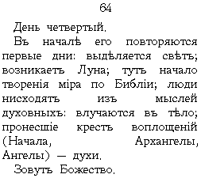
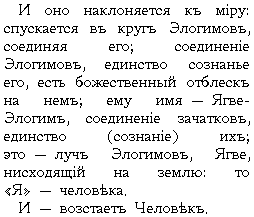
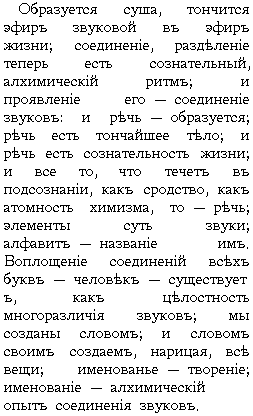
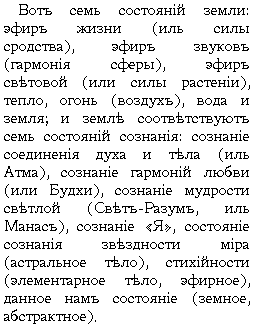
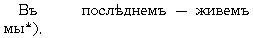
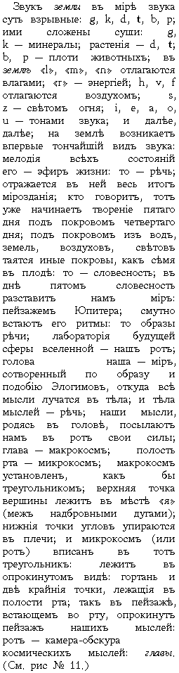
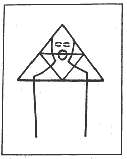
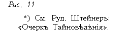

Glossolalia (Section 64)
GLOSSOLALIA

At its beginning the first days replicate themselves: light is separated; Luna arises; here is the beginning of the world according to the Bible; people descend from thoughts of spiritual beings: they radiate light into the body; those bearing the cross of incarnations (Principalities, Archangels, Angels) are -- spirits.
They summon the Deity.

And it inclines to the world: it descends into the circle of Elohim, unifying it; the unification of the Elohim, the singularity of its consciousness, is the deity's gleam on it; its name -- is Yahweh-Elohim, the union of embryos, the unity (consciousness) of them; this is -- the ray of Elohim, Yahweh, descending to the earth: this is the "Ego" -- of the human being.
And -- there arises the Human Being.

The dry earth is formed, the sounding ether is refined into the ether of life; unification, disintegration are now a conscious, alchemic rhythm; and its appearance is -- the unification of sounds: and speech is -- formed; speech is the most refined body; and speech is the consciousness of life; and everything, that now flows in subconsciousness, like an affinity, like the atomness of chemistry, that is speech; the elements are sounds; the alphabet is -- their names. The incarnation of the unifications of all letters -- the human being -- exists, as a integration of the multi-distinctions of sounds; we are created by the word; and with our own word, we create, naming, all things; naming is -- creation; naming is -- an alchemic attempt at unifying sounds.

Here are the seven stages of the earth: the ether of life (or forces of affinity), ether of sounds (harmony of the sphere), the ether of light (or forces of plant growth), warmth, fire, (air), water and earth; and to the earth correspond seven conditions of consciousness: the consciousness of the unification of the spirit and body (or Atma), consciousness of the harmony of love (or Buddhi), consciousness of the light wisdom (Light-Wisdom, or Manas), consciousness of the "I" (the astral body), elementarity (the elementary body, ether), the condition given to us (earthly, abstract).

In this last condition -- we live.*

The sound of the earth [zemlia] in the world of sounds is the plosives: g, k, d, t, b, p; the dry spots are composed of them: g, k are -- the minerals; the plants are -- d, t; b, p are -- the flesh of animals; in earth [ v zemle] "l" "m", "n" are deposited by the moistures; "r" -- by energy; h, v, f are deposited by air; s, z -- by the light of the fire; i, e, a, o, u -- by tones of sound; and so forth, and so on; on the earth arises at first a refined vision of sound; the melody of all its conditions is -- the ether of life: that is -- speech; in speech is reflected the sum total of the Universe; the one who speaks, that one is already beginning the creation of the fifth day beneath the cover of the fourth day; beneath the cover of waters, earths, airs, lights are concealed other covers, like seed in the fruit; this is -- the written word; on the fifth day the written word arranges our world: as a paysage of Jupiter; its rhythms stand up murkily: these are the images of speech; the laboratory of the future sphere of the universe is -- our mouth; our head is -- the world, created in the image and likeness of the Elohim, whence all thoughts radiate into the bodies; and bodies of thought are -- speech; our thoughts, born/generated in the head, transmit their forces into our mouth; the head is -- the macrocosm; the cavity of the mouth -- the microcosm; the macrocosm is arranged, as if a triangle; the upper point of the summit lies at the place of the "I" (between the arcs of the eyebrows); the lower points of the angles are supported on the shoulders; and the microcosm (or the mouth) is inscribed in the same triangle; it lies in an inverted view: the larynx and two extreme points, lying in the cavity of the mouth; thus in the paysage arising in the mouth, the paysage of our thoughts is turned upside down; the mouth is -- a camera obscura of cosmic thoughts: of the head. (Cf. Illustration 11)


Illustration 11
* Cf. Rudolf Steiner, Outline of Occult Science.